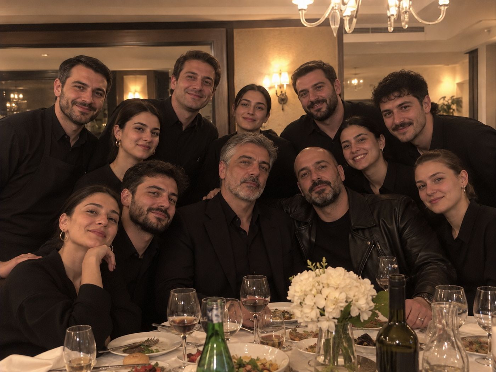
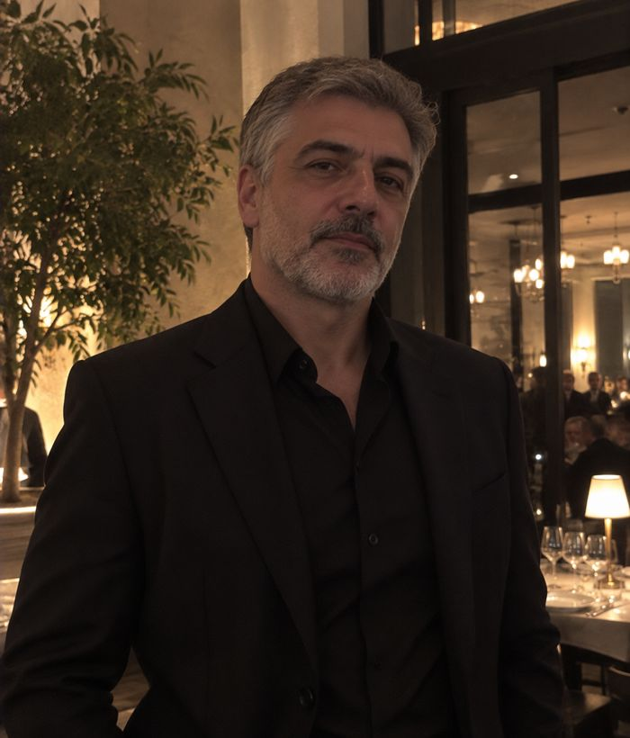

Новогодний ужин команды

Три ресторана в сердце Тбилиси. Грузинская кухня, вино из квеври и атмосфера, ради которой возвращаются.
Хинкали ручной лепки, мцвади на углях и живое многоголосие по пятницам.
Исторический особняк для свадеб, юбилеев и корпоративов.
Авторская кухня, закаты и винная карта на 300 позиций.

Гость в Грузии посланник Бога. Мы просто стараемся этому соответствовать.
Виктор Миронов основал «Миронов Групп» в 2014 году. Сегодня в команде 86 человек, а наши рестораны входят в число самых любимых в Тбилиси.
Ищем официантов в «Вера Терраса» (русский или английский обязателен), повара на мангал в «Маспиндза» и администратора банкетного зала «Тифлис Хаус». Резюме: hr@mironov-group.ge
О нас пишут: «Лучшие хинкали Старого города» (Tbilisi Today, 2025) · «Вера Терраса: закат, который стоит ужина» (Eat in Georgia, 2026)

Каждый вечер с 19:00, бронирование столов обязательно.